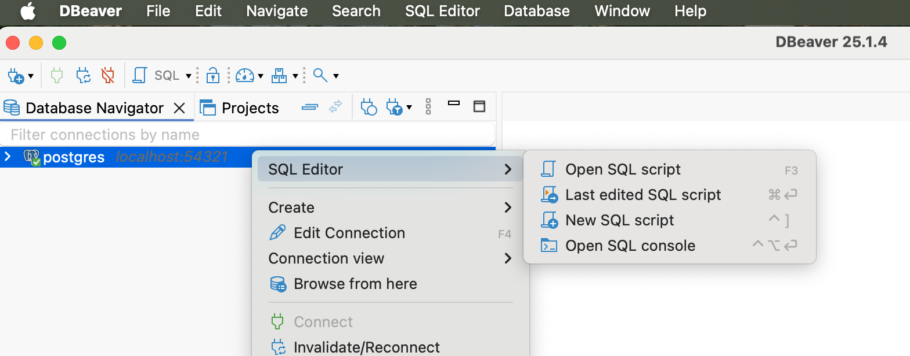

01 CMPU2007 Databases 1 – Lab 1
In this assignment, you will start practising your knowledge of SQL and relational databases on a mac laptop. To complete the lab, follow the instructions below on how to install PostgreSQL and DBeaver on your laptop.
02 How to install PostgreSQL on a Mac laptop?
- Visit the Postgres.app website in your web browser.
- In the tab Downloads, make sure to download the latest release.
- Save the .dmg file to a folder of your preference
- After the download, open the .dmg file and drag and drop the Postgres.app icon into your Applications folder.
- During installation, you might be prompted to set a password for the default PostgreSQL superuser account, called postgres. This password is required later to connect to your database through DBeaver. Make sure you remember this password as there is no easy way to recover it! You can also leave it empty if you prefer.
- Open the Applications folder and double-click on the Postgres icon to launch it. You will see a small elephant icon in your macOS menu bar, indicating that PostgreSQL is running.
03 How to install DBeaver on a MacBook laptop?
To install DBeaver on a MacBook laptop, follow the instructions below:
- Visit the DBeaver website in your web browser.
- On the left, you should see the downloads available for the DBeaver community edition – this is the free version of the software. Make sure you download the one that suits your laptop processor – Apple Silicon or Intel. If you do not know your laptop’s processor:
- Click on the Apple logo in the top-left corner of your screen
- Select About This Mac from the dropdown menu
- Once the download is complete, open the .dmg file.
- Drag and drop the DBeaver icon into your Applications folder.
- Open the Applications folder and locate the DBeaver icon. Double-click to launch it.
- On the first run, DBeaver may prompt you to install additional drivers for database connections. Follow the prompts to install the necessary drivers.
04 How to connect PostgreSQL to DBeaver on a MacBook laptop?
PostgreSQL is where your database will be stored. DBeaver is the client-side of the database, allowing you to manipulate it through code. For them to work together, they need to be connected. Connect your PostgreSQL database to DBeaver following the steps below:
- Open PostgreSQL and click on Start.
- Open DBeaver and click on Database -> New Database Connection. Select the PostgreSQL elephant icon and click Next.
- In the Connection Settings, configure the following settings:
- Host: localhost
- Port: 5432 (default for PostgreSQL)
- Database: postgres
- User: postgres
- Password: leave it empty if you did not create a password during PostgreSQL installation
- Click the Test Connection button to ensure that DBeaver can connect to your PostgreSQL database.
- If the test is successful, click Finish
- In the main DBeaver window, you should see your PostgreSQL connection listed in the Database Navigator on the left. If you cannot see the Database Navigator, click on Window->Database Navigator.
Well done! Now you have installed PostgreSQL, DBeaver, and connected them.
05 Part A - Dataset analysis
The Science Foundation Ireland Gender Dashboard presents data on research award applications, considering the applicant’s gender and whether the research was funded or not. Download and analyse the dataset or take a look at a snapshot below:

Consider the content covered during class and try to sketch a table to represent this dataset. Think of:
- The table’s name
- The columns’ names
- The columns’ data types
- The primary key (you can create a new column if none of the existing ones suit)
06 Part B - Creating a table using SQL
Open DBeaver, right-click on your database (named postgres) and select SQL Editor -> New SQL Script.

A window will open. Click on File -> Save as and save this file as lab1.sql. Modify lab1.sql to include the SQL code to create the table you sketched in part A. Make sure you drop the tables before creating them.
The PostgreSQL documentation can be helpful in this part of the assignment.
07 Part C – Running the code
To create the table, run the code by clicking on one of the three buttons:
to run the selected line of code
to run the selected line of code in a new tab

to run the entire script

08 Part D - Populating the table
Considering the data presented in the original SFI dataset, insert 5 (five) rows into the table you created.
If you want to make sure everything went well, add a “select * from [name of your table]” to the end of your code to display the resulting populated table.
09 Submitting and demonstrating your lab
- Submit the resulting SQL file to Brightspace.
- Demonstrate and run your code on DBeaver to the lab assistant.